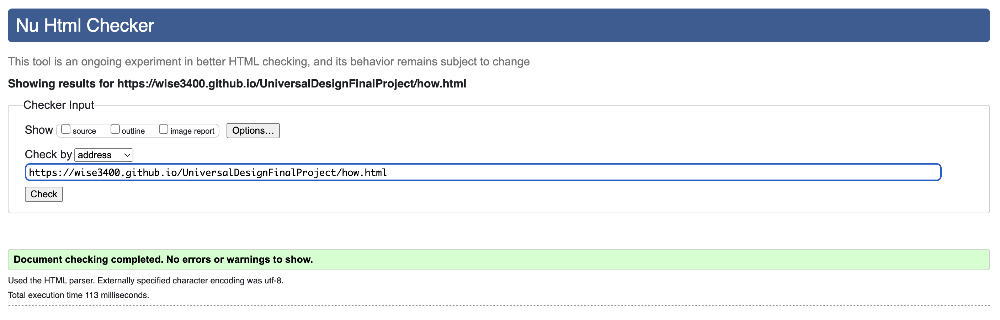
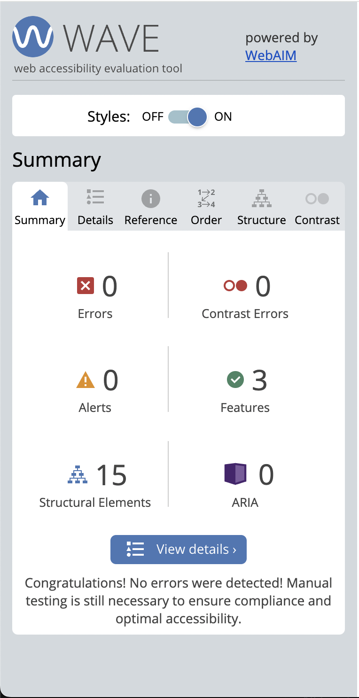
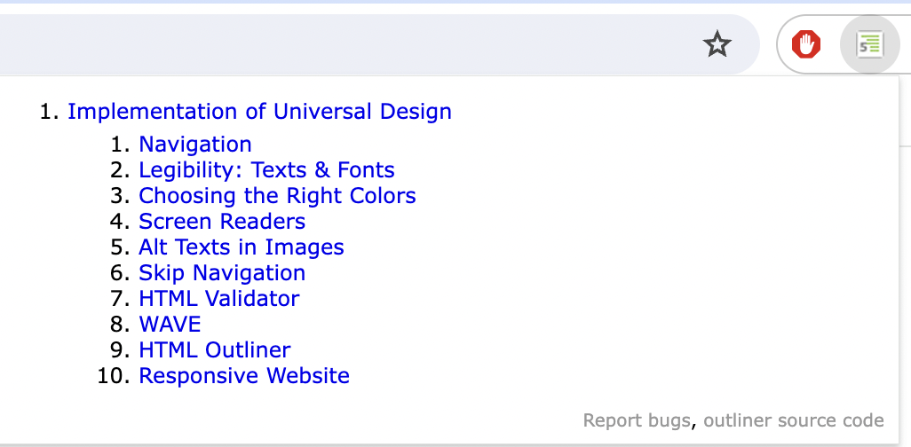

Legibility: Texts & Fonts
Choosing fonts for your website could be really frustrating sometimes. It doesn't have to be that way! It is recommended that we want to stick with two basic fonts: sans-serif and serif. The question is: "which ones belong to which?" You should always consider using sans-serif for paragraphs and normal serif for all headers.
Google fonts is a excellent platform for exploring and experimenting with various typefaces. Furthermore, it offers the convenience of generating CSS code to seamlessly import your selected fonts into your website. Additionally, it's crucial to ensure adequate line height in your paragraphs, as insufficient spacing could impede readability and diminish user engagement with the content.
Choosing the Right Colors
Colors are important. Period. If you don't have good contrast, people will have migraines when they're looking at your site. It is not recommended to use bright colors for the background because it could hurt the eyes. Adobe Color is a great tool to check for contrast between your regular text and your background. The tool will also tell you whether you have met the WCAG guidelines. More explanation here: Web AIM.
You could also use the color contrast checker that I made below!
Screen Readers
Examples such as navigation elements are often intuitive and recognizable to sighted users, but not for those who are using screen readers. To address this discrepancy, creating elements exclusively for screen readers can improve accessibility. Please see code below for implementation.
HTML Code:
<h2 class = "sr-only">Navigation </h2>
CSS Code:
.sr-only
{
border: 0;
clip: rect(0, 0, 0, 0);
height: 1px;
margin: -1px;
overflow: hidden;
padding: 0;
position: absolute;
white-space: nowrap;
width: 1px;
color: rgb(0,0,0);
background-color: rgb(255,255,255);
}
Alt Texts in Images
Ensuring the inclusion of alt text and captions for images is crucial. It facilitates accessibility for all users, ensuring that everyone can comprehend the content regardless of their abilities. Alt text allows screen readers to convey image descriptions, enabling visually impaired individuals to understand the context. Moreover, in cases where images fail to load on a website, alt text provides essential information about the image's content. Utilizing tools like the WAVE tool (linked below) can help detect any missing alt text, ensuring comprehensive accessibility standards are met.
Skip Navigation
The skip navigation feature is commonly included in web design to further enhance accessibility for people who rely on the keyboard navigation. By pressing the "tab" key, the skip navigation link allows user to bypass the main navigation and jumps directly to the main content of the page. This feature does in fact save some time. Users don't have to go through the same set of links on every page. To sum up, skip navigation is quick and easy for access to important content without getting stuck in the navigation menus.
For the HTML part, you will need to place the following code below the body tag:
<a class = "skip-link" href = "#maincontent" > Skip to main content/a>
Here's the CSS code on how to implement a skip navigation:
.skip-link
{
background: black;
color: #fff;
font-weight: 700;
padding: 4px;
position: absolute;
transform: translateY(-200%);
}
.skip-link:focus {
transform: translateY(0%);
}
.skip-link {
transition: transform 0.3s;
}
HTML Validator
The HTML Validator tool allows you to check for syntax errors in your HTML code as well as assist with debugging. This tool also checks if you are abiding the standards set by W3C. Examples of errors could include: missing tags, wrong attributes, illegal nesting of elements, etc. Sometimes, the validator could give helpful suggestions on how to fix the errors.
WAVE
WAVE is a great tool for web developers seeking to make their websites accessible. The WAVE tool could recognize a lot of the Web Content Accessibility Guidelines errors. Simple examples could be like: contrast errors, HTML code errors, missing alt texts in images, etc. The tool will also provide a detail description on how to tackle the issue.
HTML Outliner
The HTML Outliner tool provides an overall structure of any HTML page. It simply examines the HTML code and shows the hierarchy of headings and other structural elements such as sections, navigation bar, footer, etc. It is good practice to have all elements properly named. Never have untitled elements on your website.
Responsive Website
Now that mobile usage has skyrocketed, it's crucial to ensure your website is responsive. Some users depend solely on smartphones to access websites, often due to constraints like limited mobility. This can be achieved through the implementation of media queries, which assess the size of the user's device—whether it's a phone, tablet, or laptop—and adapt the layout accordingly. For instance, this adaptation might involve transitioning from a traditional horizontal navigation bar to a vertical, thumb-friendly navigation layout.